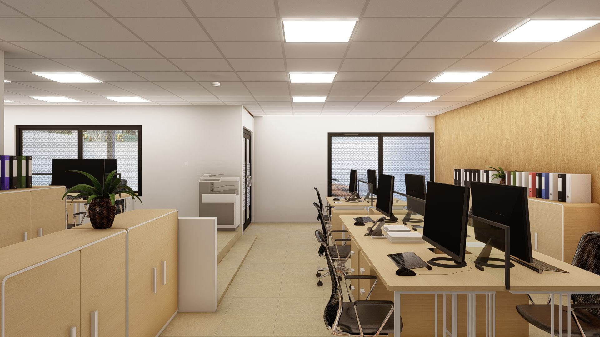
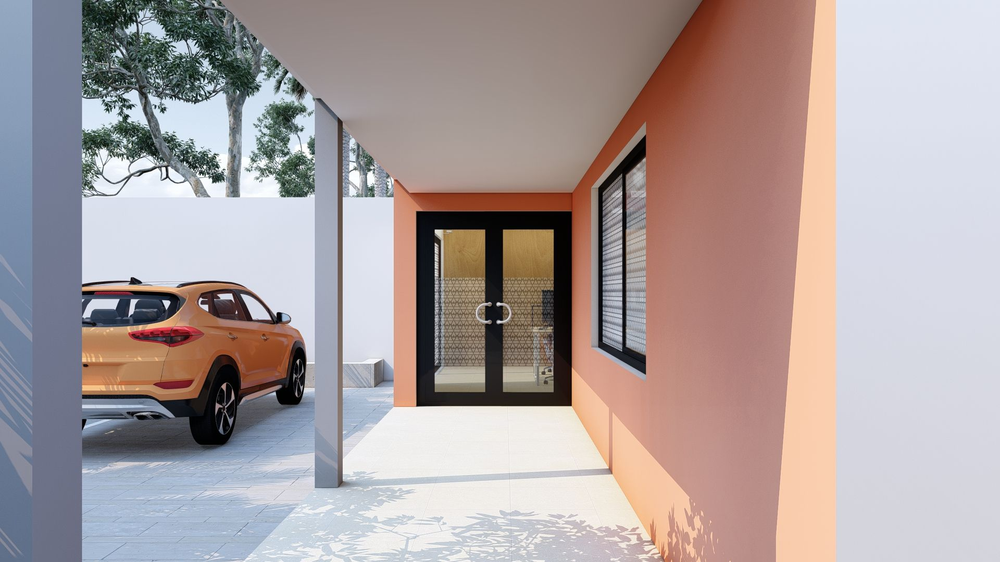
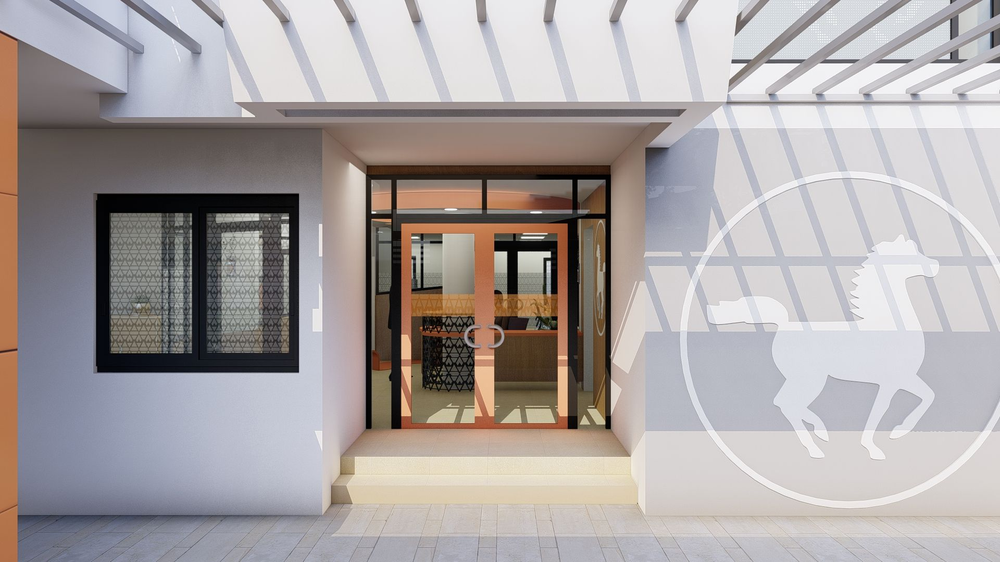
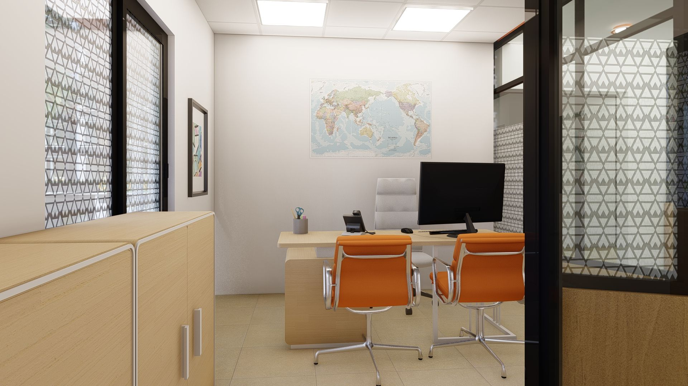
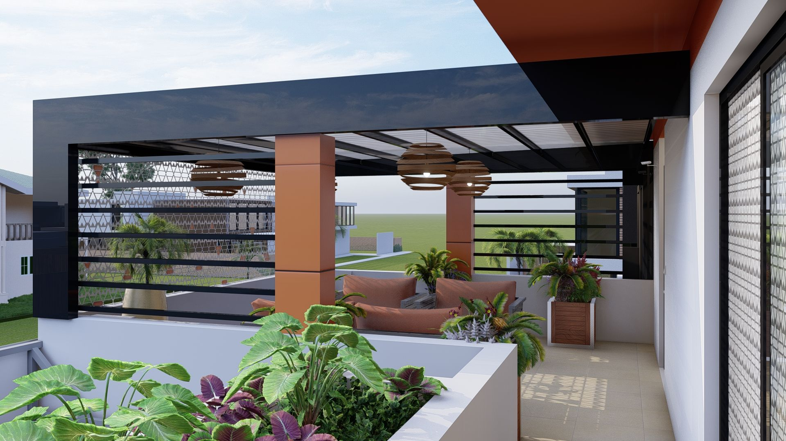
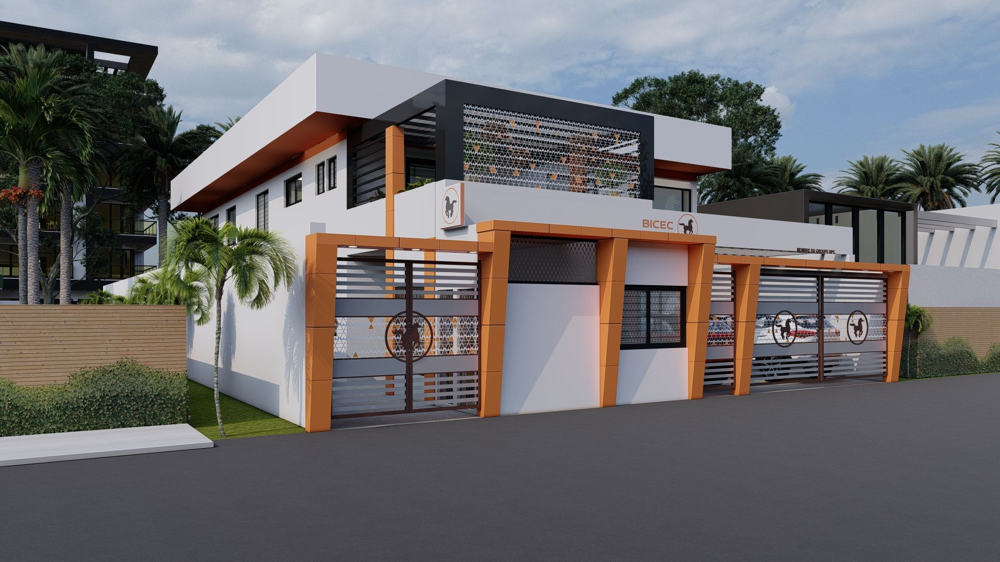
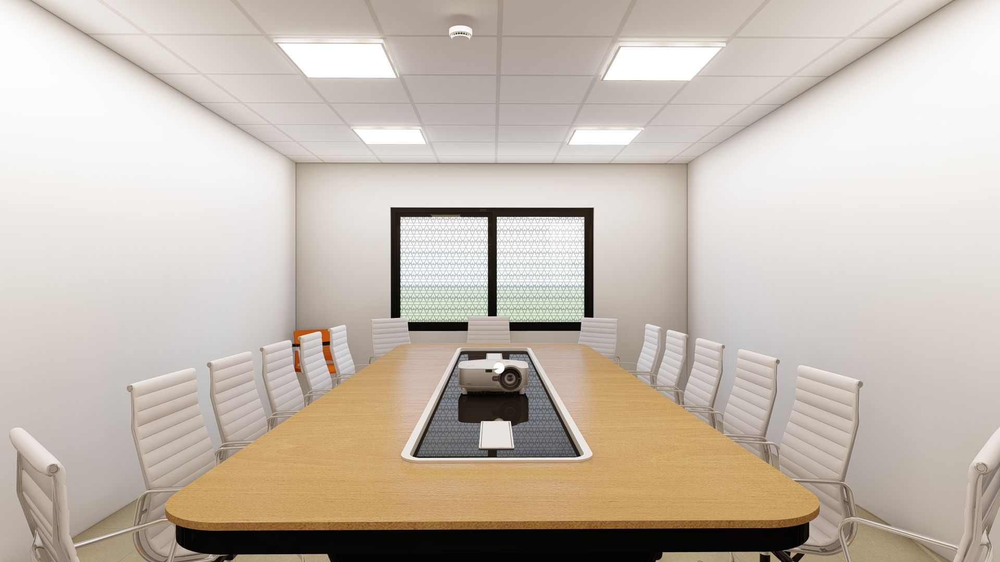

Aménagement des Nouveaux Locaux de la Société de Bourse USCA
Ce projet architectural consiste en la réhabilitation et l'aménagement complet des installations de l'agence USCA, filiale de la BICEC, située dans un bâtiment R+1 au cœur du quartier résidentiel de Bonapriso à Douala. L'enjeu majeur résidait dans la transformation d'une structure existante en un espace de travail performant, sécurisé et conforme à l'identité visuelle de l'institution financière.
Le programme de 790 m² (520 m² au RDC et 270 m² à l'étage) intègre des bureaux directionnels spacieux, un open-space pour 8 personnes, une salle de réunion et un breakroom convivial. L'approche conceptuelle a privilégié l'intégration des éléments de la charte graphique (Alucobond orangé, brise-soleil, rubans lumineux) tout en optimisant le budget et la modularité des espaces. La préservation de la piscine existante et la création d'un parking sécurisé témoignent d'une gestion fine des contraintes du site.






